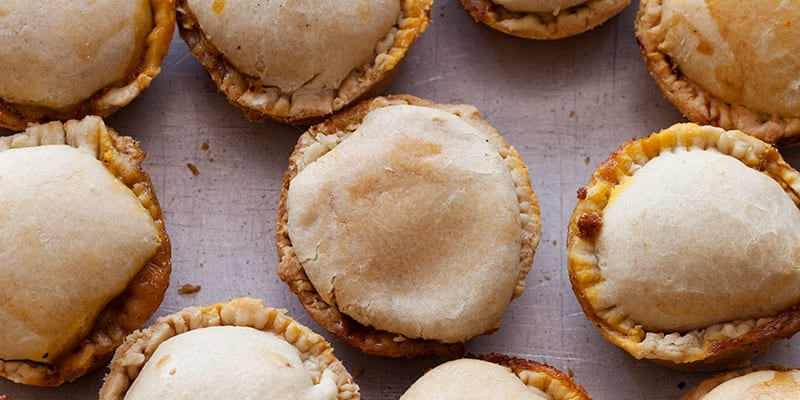
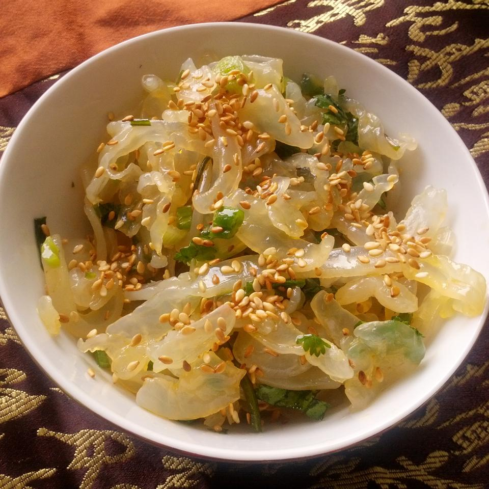
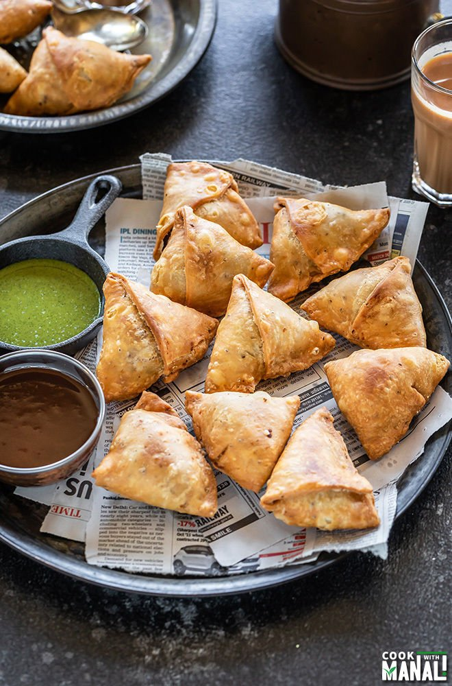
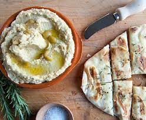

Here you will be able to get to choose your first introduction into a special country around the world. Each dish was carefully selected because of a special meaning to each of our chefs or employees.
Best Selling Appetizer of the week:
Image |
Name |
Description |
Price |
|---|---|---|---|
|  | Belizean Meat Pie | Meat pies are dough filled with chicken or beef and seasoned sauce; golden crispy on the outside, while warm soft and juicy on the inside. | $2 per meat pie |
|  | Jellyfish | It is a cold dish from China. I is made of whisk sesame oil, soy sauce, vinegar, sugar, chili oil, and ginger together in a small bowl; stir into jellyfish and marinate 15 minutes. Place sesame seeds in a dry skillet over medium-low heat; toast until golden, | $8 |
|  | Samosa | These pyramidal, golden Indian pastries are stuffed with a spiced potato filling. Served with a side of fresh mint chutney | $10 for 4 Samosas |
|  | Hummus and Pita Bread | This dip has a melt-in-your-mouth consistency that has rich and garlicky taste and oozing with umami flavors. Served with a basket of pita bread. | $7 |

|
Vegetable Spring Rolls | Spring roll is a traditional Chinese savory snack where a pastry sheet is filled with vegetables, rolled & fried. Spring vegetables like cabbage, spring onions and carrots are used for the filling. Since traditionally they were made during the spring festival with spring vegetables, they are known as spring rolls. | $10 |